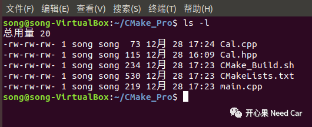
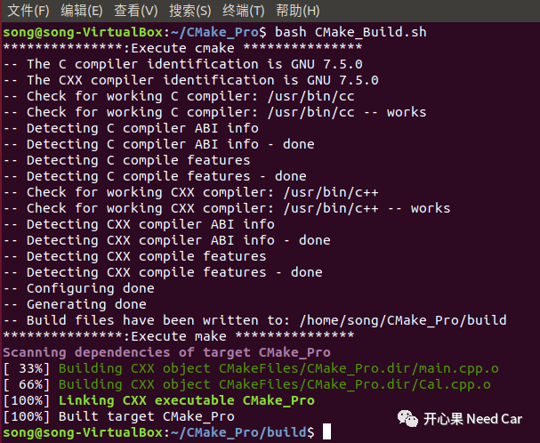
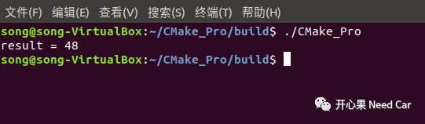
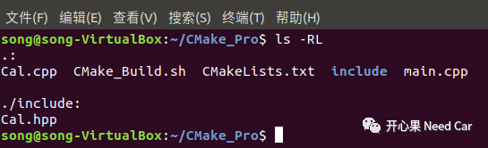
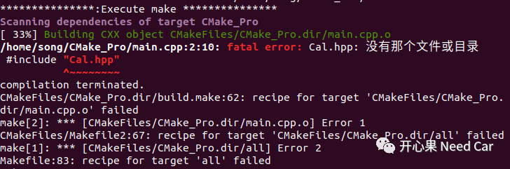
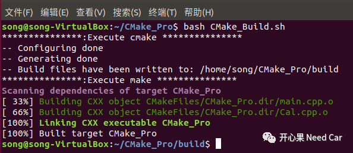
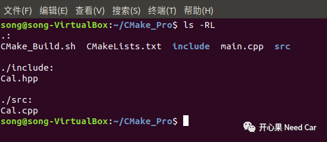
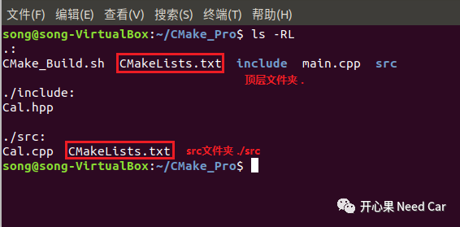
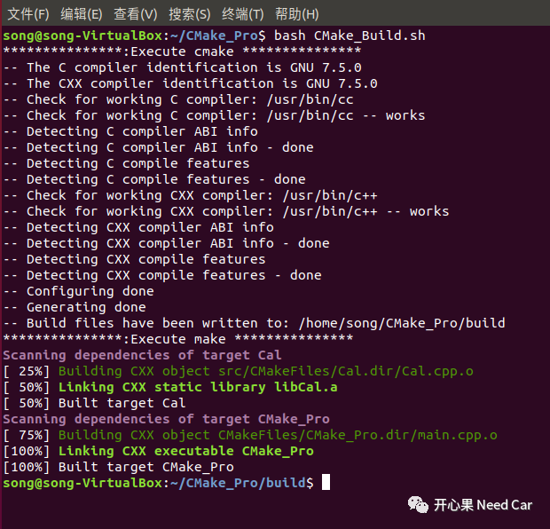
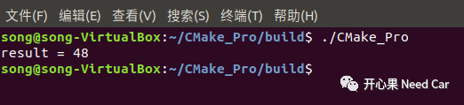

一个大的项目，会包含多个源文件和头文件，一般会分门别类的放置在不同文件夹下。那么问题来了，多个源文件如何编译？多个头文件如何包含？我们接着对CMake试刀。

多个源文件

01
main.cpp
int main(){int result;calOpt optFunc = add;result = optFunc(0x10, 0x20);std::cout << "result = " << result << std::endl;return 0;}
02
Cal.cpp
int add(int x,int y){return (x + y);}
03
Cal.hpp
typedef int(*calOpt)(int, int);extern int add(int x,int y);
04
CMakeLists.txt
cmake_minimum_required(VERSION 3.10.2)project(CMake_Pro)set(CMAKE_CXX_STANDARD 11)set(CMAKE_CXX_STANDARD_REQUIRED True)add_executable(CMake_Pro main.cpp Cal.cpp)
编译多个源文件方式1：
当同一文件夹下有多个源文件的时候，CMakeLists.txt加载方式如上所示，将多个需要编译的源文件进行编译。
05
CMake_Build.sh
dir="./build/"if [ ! -d $dir ]; thenmkdir $dirfichmod -R 777 $dircd $direcho "***************:Execute cmake ***************"cmake ..echo "***************:Execute make ***************"makeexec /bin/bash
06
执行编译
运行CMake_Build.sh脚本文件，编译过程如下所示：

在build文件夹下运行生成的CMake_Pro可执行文件，结果符合预期。


头文件包含问题


那么问题就来了，头文件在不同的文件夹下如何处理呢？
07
头文件在不同文件夹
如果要让编译器找到头文件所在路径，需要修改CMakeLists.txt文件，告诉编译器需要查找的头文件路径，CMakeLists.txt文件修改如下所示：
cmake_minimum_required(VERSION 3.10.2)project(CMake_Pro)set(CMAKE_CXX_STANDARD 11)set(CMAKE_CXX_STANDARD_REQUIRED True)add_executable(CMake_Pro main.cpp Cal.cpp)target_include_directories(CMake_Pro PUBLIC"./include/")

08
源文件在不同文件夹
文件结构修改如下所示：


顶层CMakeLists.txt文件修改如下所示：
cmake_minimum_required(VERSION 3.10.2)project(CMake_Pro)set(CMAKE_CXX_STANDARD 11)set(CMAKE_CXX_STANDARD_REQUIRED True)add_subdirectory(src)add_executable(CMake_Pro main.cpp)target_include_directories(CMake_Pro PUBLIC "./include/")target_link_libraries(CMake_Pro Cal)
src文件夹CMakeLists.txt文件修改如下所示：
# 查找当前目录下的所有源文件,并将名称保存到 CUR_DIR_SRCS 变量aux_source_directory(. CUR_DIR_SRCS)# 生成链接库add_library (Cal ${CUR_DIR_SRCS})target_include_directories(Cal PUBLIC "../include/")
编译多个源文件方式2：
编译运行如下所示：


至此，生成可执行文件的主干我们有了一定的认知，之后即是对CMake的细节功能展开学习，敬请期待后续...
往期精彩推荐：

Vector代码这样过滤CanID Range，你Get到没？